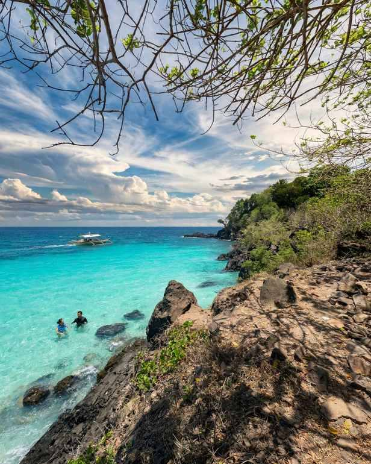

Yes, for most of the places travellers actually go. Siargao, Camiguin, Dinagat, Davao City and Samal Island all receive steady streams of visitors, and Davao City alone welcomed more than two million of them in 2025. The catch is that Mindanao is a big island group, larger than many countries, and the safety picture changes sharply from one province to the next. "Is Mindanao safe?" is really a question about which part of Mindanao.
This guide sorts the island by what foreign government advisories say as of October 2026, explains what those labels mean for an ordinary trip, and covers the practical habits that keep a visit uneventful. Advisories change without much notice, so treat this as a map for planning and recheck the official pages the week you book.
A quick note for Filipino readers: these warnings are written for foreign nationals and carry no legal weight for you. They still matter, because they shape what travel insurance will pay for, what tour operators will run, and which foreign friends will agree to come along.

What the three main advisories say
The United States rates the Philippines as a whole at Level 2, "exercise increased caution." Mindanao gets its own lines. The Sulu Archipelago, including the southern Sulu Sea, and Marawi City sit at Level 4, "do not travel." The rest of Mindanao is Level 3, "reconsider travel," with four exceptions left at the national Level 2: Davao City, Davao del Norte, Siargao Island and the Dinagat Islands.
The United Kingdom draws the line differently. It advises against all travel to western and central Mindanao and the Sulu archipelago, and against all but essential travel to the remainder of Mindanao. Camiguin, Dinagat and Siargao are carved out of that second warning, so normal UK advice applies there.
Australia's Smartraveller uses a similar split. It says do not travel to central or western Mindanao, and reconsider your need to travel to eastern Mindanao, again with Camiguin, Dinagat and Siargao excluded.
Put the three side by side and two islands, Siargao and Dinagat, come out clean on every list. Camiguin is clear on the UK and Australian pages but falls under the US Level 3 for the wider region. Davao City and Davao del Norte are clear on the US page but not specifically excluded by the UK or Australia.
The easy calls: where most visitors go
Siargao and Dinagat
Siargao is the safest bet in Mindanao if you go by the paperwork, and it is also where the crowds are. Expect the usual island concerns rather than security ones: motorbike accidents on the coastal road, rough water on surf breaks, and petty theft from unattended bags at busy beaches. Dinagat, across the strait, is far quieter and less developed, which makes boat schedules and weather the real planning issues.
Camiguin
Camiguin's small size works in its favour. One ring road circles the island, the main sights sit close to it, and the tourism scene is built around families and day-trippers. If you hold a US passport, read your insurance policy before you go, since the regional Level 3 can affect cover.
Davao City and Samal
Davao City runs like any large Philippine city, with the same advice about pickpockets in crowds and agreeing taxi fares up front. It is also the gateway to Samal Island, part of Davao del Norte, where our guide to Samal Island beyond the resorts covers the bat cave, sandbars and quieter Talikud. Inside the city, a half day at the Philippine Eagle Center is an easy add-on.
The grey zone: the rest of northern and eastern Mindanao
This is where most of the confusion lives. Cagayan de Oro, Bukidnon, Iligan, mainland Surigao, Bislig, Hinatuan and Lake Sebu all fall under "reconsider travel" for Americans and "all but essential travel" for Britons. Domestic tourists visit these places all year, rafting, hiking and touring waterfalls, and the day-to-day experience in town centres is ordinary.
The warning reflects risk across a wide area rather than a known threat at every waterfall. Its real bite for foreign visitors is insurance. Some policies exclude claims from areas where the visitor's own government advises against travel, which can leave a medical evacuation unpaid. Check the exact wording of your policy, not the marketing page.
If you go, choose places with an established visitor routine. A trip to Sohoton Cove in Bucas Grande, for example, runs through registered boat operators and local tourism desks, which means people know where you are and when you are due back.
Where the warnings are firm
The Sulu archipelago and Marawi City sit at the US "do not travel" level. The UK and Australia go wider and put all of western and central Mindanao in their top tier. Those summaries do not list every province, so if your plans include Zamboanga City or anywhere in the Bangsamoro region, read the full advisory text before you book.
Travel there does happen, often for work, family or aid projects, usually with local contacts and security arrangements in place. For a holiday, with so much of Mindanao open on easier terms, the trade-off rarely makes sense.
Habits that keep a Mindanao trip uneventful
Recheck the advisory twice: once when you book and again a few days before you fly. Levels can shift after a single incident, and the change will not reach your inbox unless you register with your embassy's traveller programme.
Book activities through accredited operators or the municipal tourism office. They file passenger lists for boat trips, know which roads are passable, and will tell you plainly if a site has been closed.
Plan long road transfers in daylight. Distances between Mindanao's sights are bigger than they look on a map, and arriving in an unfamiliar town after dark adds stress for little gain.
Watch the weather as closely as the news. The Pacific-facing east coast, including Siargao and Surigao, often sees its heaviest rain between November and February, and cancelled boats strand more travellers than any security issue.
Tell your accommodation where you are heading each day, and keep a copy of your ID and insurance details on your phone and on paper.
So, should you go?
For Siargao, Dinagat, Camiguin, Davao City and Samal, the answer is a straightforward yes with ordinary travel sense. For the northern and eastern mainland, the trip is very doable, but foreign visitors should sort out insurance first and stick to well-run routes. The far west and the Sulu islands are the places to leave off a leisure itinerary for now. Pick your corner of Mindanao with that map in mind, and the island has far more to offer than its reputation suggests.
Sources
Philippines Travel Advisory – U.S. Department of State, reissued 8 May 2025
Philippines travel advice – UK Foreign, Commonwealth & Development Office, updated 15 July 2026
Philippines Travel Advice & Safety – Smartraveller, Australian Government
Davao City tops 2M tourist arrivals in 2025 – SunStar Davao, 30 April 2026


Comments
No comments yet. Been here recently? Share a tip or ask a question.
Leave a Reply